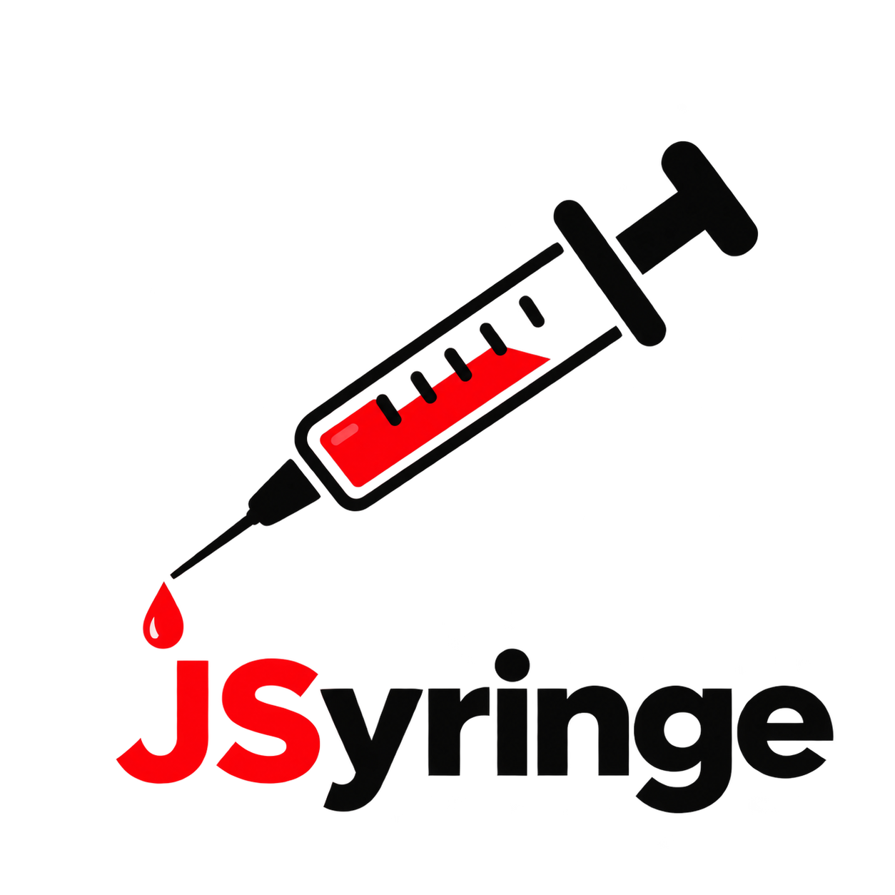

0scripts
0enabled
0errors
Recent scripts
No scripts yet. Create one or import a .user.js file.
Diagnostics
User script APIchecking…
…Registered in browserchecking…
…Active registrations
How to verifyOpen a matching page, press F12 → Console. Every injected script logs a red JSyringe tag with its name. Reload the page after saving a script.
Settings
Delete all scriptsRemoves every script permanently. Export a backup first.